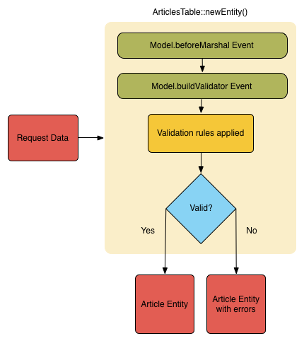
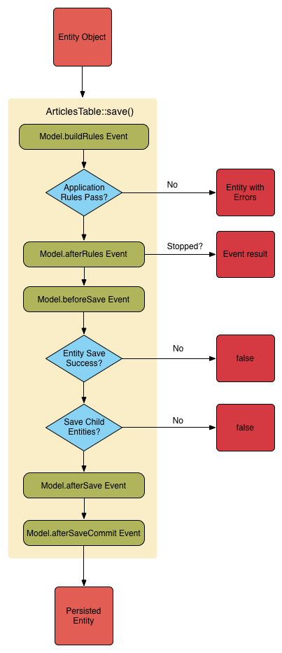

Coup d’Oeil sur Enregistrement des Données
Les applications ont habituellement deux façons d’enregistrer les données.
La première est évidemment via des formulaires web et l’autre en générant ou
modifiant directement les données dans le code pour l’envoyer à la base de
données.
Insérer des Données
Le moyen le plus simple d’insérer des données dans une base de données est de
créer une nouvelle entity et de la passer à la méthode save() de la classe
Table:
use Cake\ORM\TableRegistry;
$articlesTable = TableRegistry::get('Articles');
$article = $articlesTable->newEntity();
$article->title = 'A New Article';
$article->body = 'Ceci est le contenu de cet article';
if ($articlesTable->save($article)) {
// L'entity $article contient maintenant l'id
$id = $article->id;
}
Mettre à jour des Données
La mise à jour est aussi simple et la méthode save() sert également ce
but:
use Cake\ORM\TableRegistry;
$articlesTable = TableRegistry::get('Articles');
$article = $articlesTable->get(12); // Retourne l'article avec l'id 12
$article->title = 'Un nouveau titre pour cet article';
$articlesTable->save($article);
CakePHP saura s’il doit faire un ajout ou une mise à jour en se basant sur le
résultat de la méthode isNew(). Les entities qui sont récupérées via
get() ou find() renverrons toujours false lorsque la méthode
isNew() est appelée sur eux.
Enregistrements avec Associations
Par défaut, la méthode save() ne sauvegardera qu’un seul niveau
d’association:
$articlesTable = TableRegistry::get('Articles');
$author = $articlesTable->Authors->findByUserName('mark')->first();
$article = $articlesTable->newEntity();
$article->title = 'Un article par mark';
$article->author = $author;
if ($articlesTable->save($article)) {
// La valeur de la clé étrangère a été ajoutée automatiquement.
echo $article->author_id;
}
La méthode save() est également capable de créer de nouveaux
enregistrements pour les associations:
$firstComment = $articlesTable->Comments->newEntity();
$firstComment->body = 'Un super article';
$secondComment = $articlesTable->Comments->newEntity();
$secondComment->body = 'J aime lire ceci!';
$tag1 = $articlesTable->Tags->findByName('cakephp')->first();
$tag2 = $articlesTable->Tags->newEntity();
$tag2->name = 'Génial';
$article = $articlesTable->get(12);
$article->comments = [$firstComment, $secondComment];
$article->tags = [$tag1, $tag2];
$articlesTable->save($article);
Associer des Enregistrements Many to Many
Dans le code ci-dessus il y a déjà un exemple de liaison d’un article vers
deux tags. Il y a un autre moyen de faire la même chose en utilisant la
méthode link() dans l’association:
$tag1 = $articlesTable->Tags->findByName('cakephp')->first();
$tag2 = $articlesTable->Tags->newEntity();
$tag2->name = 'Génial';
$articlesTable->Tags->link($article, [$tag1, $tag2]);
Sauvegarder des Données dans la Table de Jointure
L’enregistrement de données dans la table de jointure est réalisé en utilisant
la propriété spéciale _joinData. Cette propriété doit être une instance
d’Entity de la table de jointure:
// Lie les enregistrements pour la première fois.
$tag1 = $articlesTable->Tags->findByName('cakephp')->first();
$tag1->_joinData = $articlesTable->ArticlesTags->newEntity();
$tag1->_joinData->tagComment = 'Je pense que cela est lié à CakePHP';
$articlesTable->Tags->link($article, [$tag1]);
// Mise à jour d'une association existante.
$article = $articlesTable->get(1, ['contain' => ['Tags']]);
$article->tags[0]->_joinData->tagComment = 'Fresh comment.'
// Nécessaire car nous changeons une propriété directement
$article->dirty('tags', true);
$articlesTable->save($article, ['associated' => ['Tags']]);
Vous pouvez aussi créer/mettre à jour les informations de la table jointe quand
vous utilisez newEntity() ou patchEntity(). Vos données POST devraient
ressembler à ceci:
$data = [
'title' => 'My great blog post',
'body' => 'Some content that goes on for a bit.',
'tags' => [
[
'id' => 10,
'_joinData' => [
'tagComment' => 'Great article!',
]
],
]
];
$articlesTable->newEntity($data, ['associated' => ['Tags']]);
Délier les Enregistrements Many To Many
Délier des enregistrements Many to Many (plusieurs à plusieurs) est réalisable
via la méthode unlink():
$tags = $articlesTable
->Tags
->find()
->where(['name IN' => ['cakephp', 'awesome']])
->toArray();
$articlesTable->Tags->unlink($article, $tags);
Lors de la modification d’enregistrements en définissant ou modifiant
directement leurs propriétés il n’y aura pas de validation, ce qui est
problématique pour l’acceptation de données de formulaire. La section suivante
va vous expliquer comment convertir efficacement les données de formulaire
en entities afin qu’elles puissent être validées et sauvegardées.
Convertir les Données Requêtées en Entities
Avant de modifier et sauvegarder à nouveau les données dans la base de données,
vous devrez convertir les données requêtées (qui se trouvent dans
$this->request->getData()) à partir du format de tableau
qui se trouvent dans la requête, et les entities que l’ORM utilise. La classe
Table facilite la conversion d’une ou de plusieurs entities à partir des
données requêtées. Vous pouvez convertir une entity unique en utilisant:
// Dans un controller.
$articles = TableRegistry::get('Articles');
// Valide et convertit en un objet Entity
$entity = $articles->newEntity($this->request->getData());
Les données requêtées doivent suivre la structure de vos entities. Par
exemple si vous avez un article qui appartient à un utilisateur, et si vous
avez plusieurs commentaires, vos données requêtées devraient ressembler
à ceci:
$data = [
'title' => 'My title',
'body' => 'The text',
'user_id' => 1,
'user' => [
'username' => 'mark'
],
'comments' => [
['body' => 'First comment'],
['body' => 'Second comment'],
]
];
Par défaut, la méthode newEntity() valide les données qui lui sont passées,
comme expliqué dans la section Valider les Données Avant de Construire les Entities. Si vous voulez
empêcher les données d’être validées, passez l’option 'validate' => false:
$entity = $articles->newEntity($data, ['validate' => false]);
Lors de la construction de formulaires qui sauvegardent des associations
imbriquées, vous devez définir quelles associations doivent être prises en
compte:
// Dans un controller
$articles = TableRegistry::get('Articles');
// Nouvelle entity avec des associations imbriquées
$entity = $articles->newEntity($this->request->getData(), [
'associated' => [
'Tags', 'Comments' => ['associated' => ['Users']]
]
]);
Ce qui est au-dessus indique que les ‘Tags’, ‘Comments’ et ‘Users’ pour les
Comments doivent être prises en compte. D’une autre façon, vous pouvez utiliser
la notation par point pour être plus bref:
// Dans un controller
$articles = TableRegistry::get('Articles');
// Nouvelle entity avec des associations imbriquées en utilisant
// la notation par point
$entity = $articles->newEntity($this->request->getData(), [
'associated' => ['Tags', 'Comments.Users']
]);
Vous pouvez aussi désactiver le marshalling d’associations imbriquées comme
ceci:
$entity = $articles->newEntity($data, ['associated' => []]);
// ou...
$entity = $articles->patchEntity($entity, $data, ['associated' => []]);
Les données associées sont également validées par défaut à moins que le
contraire ne lui soit spécifié. Vous pouvez également changer l’ensemble
de validation utilisé par association:
// Dans un controller
$articles = TableRegistry::get('Articles');
// Ne fait pas la validation pour l'association Tags et
// appelle l'ensemble de validation 'signup' pour Comments.Users
$entity = $articles->newEntity($this->request->getData(), [
'associated' => [
'Tags' => ['validate' => false],
'Comments.Users' => ['validate' => 'signup']
]
]);
Le chapitre Utiliser un Ensemble de Validation Différent pour les Associations a plus
d’informations sur la façon d’utiliser les différents validateurs pour des
marshalling associés.
Le diagramme suivant donne un aperçu de ce qui se passe à l’intérieur de la
méthode newEntity() ou patchEntity():

Vous récupérerez toujours une entity en retour de newEntity(). Si la
validation échoue, votre entité contiendra des erreurs et tous les champs
invalides seront absents de l’entity créée.
Convertir des Données BelongsToMany
Si vous sauvegardez des associations belongsToMany, vous pouvez soit utiliser
une liste de données d’entity ou une liste d’ids. Quand vous utilisez une liste
de données d’entity, vos données requêtées devraient ressembler à ceci:
$data = [
'title' => 'My title',
'body' => 'The text',
'user_id' => 1,
'tags' => [
['tag' => 'CakePHP'],
['tag' => 'Internet'],
]
];
Le code ci-dessus créera 2 nouveaux tags. Si vous voulez créer un lien d’un
article vers des tags existants, vous pouvez utiliser une lite des ids.
Vos données de requête doivent ressembler à ceci:
$data = [
'title' => 'My title',
'body' => 'The text',
'user_id' => 1,
'tags' => [
'_ids' => [1, 2, 3, 4]
]
];
Si vous souhaitez lier des entrées belongsToMany existantes et en créer de
nouvelles en même temps, vous pouvez utiliser la forme étendue:
$data = [
'title' => 'My title',
'body' => 'The text',
'user_id' => 1,
'tags' => [
['name' => 'A new tag'],
['name' => 'Another new tag'],
['id' => 5],
['id' => 21]
]
];
Quand les données ci-dessus seront converties en entities, il y aura 4 tags.
Les deux premiers seront de nouveaux objets, et les deux seconds seront des
références à des tags existants.
Quand les données de belongsToMany sont converties, vous pouvez désactiver la
création d’une nouvelle entity, en utilisant l’option onlyIds. Quand elle
est activée, cette option restreint la conversion des données de belongsToMany
pour utiliser uniquement la clé _ids et ignorer toutes les autres données.
Nouveau dans la version 3.1.0: L’option onlyIds a été ajoutée dans 3.1.0
Convertir des Données HasMany
Si vous souhaitez mettre à jour les associations hasMany existantes et mettre à
jour leurs propriétés, vous devriez d’abord vous assurer que votre entity est
chargée avec l’association hasMany remplie. Vous pouvez ensuite utiliser les
données de la requête de la façon suivante:
$data = [
'title' => 'Mon titre',
'body' => 'Le texte',
'comments' => [
['id' => 1, 'comment' => 'Mettre à jour le premier commentaire'],
['id' => 2, 'comment' => 'Mettre à jour le deuxième commentaire'],
['comment' => 'Créer un nouveau commentaire'],
]
];
Si vous sauvegardez des associations hasMany et voulez lier des enregistrements
existants à un nouveau parent, vous pouvez utiliser le format _ids:
$data = [
'title' => 'My new article',
'body' => 'The text',
'user_id' => 1,
'comments' => [
'_ids' => [1, 2, 3, 4]
]
];
Quand les données de hasMany sont converties, vous pouvez désactiver la
création d’une nouvelle entity, en utilisant l’option onlyIds. Quand elle
est activée, cette option restreint la conversion des données hasMany pour
utiliser uniquement la clé _ids et ignorer toutes les autres données.
Nouveau dans la version 3.1.0: L’option onlyIds a été ajoutée dans 3.1.0
Convertir des Enregistrements Multiples
Lorsque vous créez des formulaires de création/mise à jour d’enregistrements
multiples en une seule opération vous pouvez utiliser newEntities():
// Dans un controller.
$articles = TableRegistry::get('Articles');
$entities = $articles->newEntities($this->request->getData());
Dans cette situation, les données de requête pour plusieurs articles doivent
ressembler à ceci:
$data = [
[
'title' => 'First post',
'published' => 1
],
[
'title' => 'Second post',
'published' => 1
],
];
Une fois que vous avez converti les données requêtées dans des entities, vous
pouvez leur faire un save() ou un delete():
// Dans un controller.
foreach ($entities as $entity) {
// Save entity
$articles->save($entity);
// Supprime l'entity
$articles->delete($entity);
}
Ce qui est au-dessus va lancer une transaction séparée pour chaque entity
sauvegardée. Si vous voulez traiter toutes les entities en transaction unique,
vous pouvez utiliser transactional():
// Dans un controller.
$articles->getConnection()->transactional(function () use ($articles, $entities) {
foreach ($entities as $entity) {
$articles->save($entity, ['atomic' => false]);
}
});
Changer les Champs Accessibles
Il est également possible de permettre à newEntity() d’écrire dans des
champs non accessibles. Par exemple, id est généralement absent de la
propriété _accessible. Dans ce cas, vous pouvez utiliser l’option
accessibleFields. Cela est particulièrement intéressant pour conserver les
associations existantes entre certaines entities:
// Dans un controller.
$articles = TableRegistry::get('Articles');
$entity = $articles->newEntity($this->request->getData(), [
'associated' => [
'Tags', 'Comments' => [
'associated' => [
'Users' => [
'accessibleFields' => ['id' => true]
]
]
]
]
]);
Le code ci-dessus permet de conserver l’association entre Comments et Users pour
l’entity concernée.
Note
Si vous utilisez newEntity() et qu’il manque quelques unes ou toutes les
données dans les entities résultantes, vérifiez deux fois que les colonnes
que vous souhaitez définir sont listées dans la propriété $_accessible
de votre entity.
Fusionner les Données Requêtées dans les Entities
Afin de mettre à jour les entities, vous pouvez choisir d’appliquer les données
requêtées directement dans une entity existante. Ceci a l’avantage que seuls les
champs qui changent réellement seront sauvegardés, au lieu d’envoyer tous les
champs à la base de données, même ceux qui sont identiques. Vous pouvez
fusionner un tableau de données brutes dans une entity existante en utilisant la
méthode patchEntity():
// Dans un controller.
$articles = TableRegistry::get('Articles');
$article = $articles->get(1);
$articles->patchEntity($article, $this->request->getData());
$articles->save($article);
Validation et patchEntity
De la même façon que newEntity(), la méthode patchEntity validera les
données avant qu’elles soient copiées dans l’entity. Ce mécanisme est expliqué
dans la section Valider les Données Avant de Construire les Entities. Si vous souhaitez désactiver la
validation lors du patch d’une entity, passez l’option validate comme
montré ci-dessous:
// Dans un controller.
$articles = TableRegistry::get('Articles');
$article = $articles->get(1);
$articles->patchEntity($article, $data, ['validate' => false]);
Vous pouvez également changer l’ensemble de validation utilisé pour l’entity
ou n’importe qu’elle association:
$articles->patchEntity($article, $this->request->getData(), [
'validate' => 'custom',
'associated' => ['Tags', 'Comments.Users' => ['validate' => 'signup']]
]);
Patcher des HasMany et BelongsToMany
Comme expliqué dans la section précédente, les données requêtées doivent suivre
la structure de votre entity. La méthode patchEntity() est également capable
de fusionner les associations, par défaut seul les premiers niveaux
d’associations sont fusionnés mais si vous voulez contrôler la liste des
associations à fusionner ou fusionner des niveaux de plus en plus profonds, vous
pouvez utiliser le troisième paramètre de la méthode:
// Dans un controller.
$associated = ['Tags', 'Comments.Users'];
$article = $articles->get(1, ['contain' => $associated]);
$articles->patchEntity($article, $this->request->getData(), [
'associated' => $associated
]);
$articles->save($article);
Les associations sont fusionnées en faisant correspondre le champ de clé
primaire dans la source entities avec les champs correspondants dans le tableau
de données. Les associations vont construire de nouvelles entities si aucune
entity précédente n’est trouvé pour la propriété cible.
Pa exemple, prenons les données requêtées comme ce qui suit:
$data = [
'title' => 'My title',
'user' => [
'username' => 'mark'
]
];
Essayer de faire un patch d’une entity sans entity dans la propriété user va
créer une nouvelle entity user:
// Dans un controller.
$entity = $articles->patchEntity(new Article, $data);
echo $entity->user->username; // Echoes 'mark'
La même chose peut être dite pour les associations hasMany et belongsToMany,
mais avec une mise en garde importante.
Note
Pour les associations belongsToMany, vérifiez que les entities associées
sont bien présentes dans la propriété $_accessible
Si Product belongsToMany Tag:
// Dans l'entity Product
protected $_accessible = [
// .. autre propriété
'tags' => true,
];
Note
Pour les associations hasMany et belongsToMany, s’il y avait des entities
qui ne pouvaient pas correspondre avec leur clé primaire à aucun
enregistrement dans le tableau de données, alors ces enregistrements
seraient annulés de l’entity résultante.
Rappelez-vous que l’utilisation de patchEntity() ou de
patchEntities() ne fait pas persister les données, il modifie juste
(ou créé) les entities données. Afin de sauvegarder l’entity, vous devrez
appeler la méthode save() de la table.
Par exemple, considérons le cas suivant:
$data = [
'title' => 'My title',
'body' => 'The text',
'comments' => [
['body' => 'First comment', 'id' => 1],
['body' => 'Second comment', 'id' => 2],
]
];
$article = $articles->newEntity($data);
$articles->save($article);
$newData = [
'comments' => [
['body' => 'Changed comment', 'id' => 1],
['body' => 'A new comment'],
]
];
$entity = $articles->newEntity($data);
$articles->save($entity);
$newData = [
'comments' => [
['body' => 'Changed comment', 'id' => 1],
['body' => 'A new comment'],
]
];
$articles->patchEntity($entity, $newData);
$articles->save($entity);
A la fin, si l’entity est à nouveau convertie en tableau, vous obtiendrez le
résultat suivant:
[
'title' => 'My title',
'body' => 'The text',
'comments' => [
['body' => 'Changed comment', 'id' => 1],
['body' => 'A new comment'],
]
];
Comme vous l’avez vu, le commentaire avec l’id 2 n’est plus ici, puisqu’il ne
correspondait à rien dans le tableau $newData. Ceci arrive car CakePHP
reflète le nouvel état décrit dans les données requêtées.
Des avantages supplémentaires à cette approche sont qu’elle réduit le nombre
d’opérations à exécuter quand on fait persister l’entity à nouveau.
Notez bien que ceci ne signifie pas que le commentaire avec l’id 2 a été
supprimé de la base de données, si vous souhaitez retirer les commentaires pour
cet article qui ne sont pas présents dans l’entity, vous pouvez collecter
les clés primaires et exécuter une suppression batch pour celles qui ne sont
pas dans la liste:
// Dans un controller.
$comments = TableRegistry::get('Comments');
$present = (new Collection($entity->comments))->extract('id')->filter()->toArray();
$comments->deleteAll([
'article_id' => $article->id,
'id NOT IN' => $present
]);
Comme vous pouvez le voir, ceci permet aussi de créer des solutions lorsqu’une
association a besoin d’être implémentée comme un ensemble unique.
Vous pouvez aussi faire un patch de plusieurs entities en une fois. Les
considérations faîtes pour les associations hasMany et belongsToMany
s’appliquent pour le patch de plusieurs entities: Les correspondances sont
faites avec la valeur du champ de la clé primaire et les correspondances
manquantes dans le tableau original des entities seront retirées et non
présentes dans les résultats:
// Dans un controller.
$articles = TableRegistry::get('Articles');
$list = $articles->find('popular')->toArray();
$patched = $articles->patchEntities($list, $this->request->getData());
foreach ($patched as $entity) {
$articles->save($entity);
}
De la même façon que pour l’utilisation de patchEntity(), vous pouvez
utiliser le troisième argument pour contrôler les associations qui seront
fusionnées dans chacune des entities du tableau:
// Dans un controller.
$patched = $articles->patchEntities(
$list,
$this->request->getData(),
['associated' => ['Tags', 'Comments.Users']]
);
Modifier les Données Requêtées Avant de Construire les Entities
Si vous devez modifier les données requêtées avant qu’elles ne soient
converties en entities, vous pouvez utiliser l’event Model.beforeMarshal.
Cet event vous laisse manipuler les données requêtées juste avant que les
entities ne soient créées:
// Mettez des use en haut de votre fichier.
use Cake\Event\Event;
use ArrayObject;
// Dans une classe table ou behavior
public function beforeMarshal(Event $event, ArrayObject $data, ArrayObject $options)
{
if (isset($data['username'])) {
$data['username'] = mb_strtolower($data['username']);
}
}
Le paramètre $data est une instance ArrayObject, donc vous n’avez pas
à la retourner pour changer les données utilisées pour créer les entities.
Le but principal de beforeMarshal est d’aider les utilisateurs à passer
le process de validation lorsque des erreurs simples peuvent être résolues
automatiquement, ou lorsque les données doivent être restructurées pour être
mises dans les bons champs.
L’event Model.beforeMarshal est lancé juste au début du process de validation.
Une des raisons à cela est que beforeMarshal est autorisé à modifier les
règles de validation et les options d’enregistrement, telle que la whitelist
des champs. La validation est lancée juste après que cet événement soit
terminé. Un exemple commun de modification des données avant qu’elles soient
validées est la suppression des espaces superflus d’un champ avant
l’enregistrement:
// Mettez des use en haut de votre fichier.
use Cake\Event\Event;
use ArrayObject;
// Dans une table ou un behavior
public function beforeMarshal(Event $event, ArrayObject $data, ArrayObject $options)
{
foreach ($data as $key => $value) {
if (is_string($value)) {
$data[$key] = trim($value);
}
}
}
A cause de la manière dont le process de marshalling fonctionne, si un champ ne
passe pas la validation, il sera automatiquement supprimé du tableau de données
et ne sera pas copié dans l’entity. cela évite d’avoir des données incohérentes
dans l’objet entity.
Valider les Données Avant de Construire les Entities
Le chapitre Valider des Données recèle plus d’information sur l’utilisation
des fonctionnalités de validation de CakePHP pour garantir que vos données
restent correctes et cohérentes.
Eviter les Attaques d’Assignement en Masse de Propriétés
Lors de la création ou la fusion des entities à partir de données requêtées,
vous devez faire attention à ce que vous autorisez à changer ou à ajouter
dans les entities à vos utilisateurs. Par exemple, en envoyant un tableau
dans la requête contenant user_id, un pirate pourrait changer le
propriétaire d’un article, ce qui entraînerait des effets indésirables:
// Contient ['user_id' => 100, 'title' => 'Hacked!'];
$data = $this->request->data;
$entity = $this->patchEntity($entity, $data);
$this->save($entity);
Il y a deux façons de se protéger contre ce problème. La première est de
définir les colonnes par défaut qui peuvent être définies en toute sécurité à
partir d’une requête en utilisant la fonctionnalité
d’Assignement de Masse dans les entities.
La deuxième façon est d’utiliser l’option fieldList lors de la création ou
la fusion de données dans une entity:
// Contient ['user_id' => 100, 'title' => 'Hacked!'];
$data = $this->request->data;
// Permet seulement de changer le title
$entity = $this->patchEntity($entity, $data, [
'fieldList' => ['title']
]);
$this->save($entity);
Vous pouvez aussi contrôler les propriétés qui peuvent être assignées pour les
associations:
// Permet seulement le changement de title et de tags
// et le nom du tag est la seule colonne qui peut être définie
$entity = $this->patchEntity($entity, $data, [
'fieldList' => ['title', 'tags'],
'associated' => ['Tags' => ['fieldList' => ['name']]]
]);
$this->save($entity);
Utiliser cette fonctionnalité est pratique quand vous avez différentes fonctions
auxquelles vos utilisateurs peuvent accéder et que vous voulez laisser vos
utilisateurs modifier différentes données basées sur leurs privilèges.
L’option fieldList est aussi acceptée par les méthodes newEntity(),
newEntities() et patchEntities().
Sauvegarder les Entities
-
Cake\ORM\Table::save(Entity $entity, array $options = [])
Quand vous sauvegardez les données requêtées dans votre base de données, vous
devez d’abord hydrater une nouvelle entity en utilisant newEntity() pour
passer dans save(). Pare exemple:
// Dans un controller
$articles = TableRegistry::get('Articles');
$article = $articles->newEntity($this->request->getData());
if ($articles->save($article)) {
// ...
}
L’ORM utilise la méthode isNew() sur une entity pour déterminer si oui ou
non une insertion ou une mise à jour doit être faite. Si la méthode
isNew() retourne true et que l’entity a une valeur de clé primaire,
une requête ‘exists’ sera faîte. La requête ‘exists’ peut être supprimée en
passant 'checkExisting' => false à l’argument $options:
$articles->save($article, ['checkExisting' => false]);
Une fois que vous avez chargé quelques entities, vous voudrez probablement les
modifier et les mettre à jour dans votre base de données. C’est un exercice
simple dans CakePHP:
$articles = TableRegistry::get('Articles');
$article = $articles->find('all')->where(['id' => 2])->first();
$article->title = 'My new title';
$articles->save($article);
Lors de la sauvegarde, CakePHP va
appliquer vos règles de validation, et
entourer l’opération de sauvegarde dans une transaction de base de données.
Cela va aussi seulement mettre à jour les propriétés qui ont changé. Le
save() ci-dessus va générer le code SQL suivant:
UPDATE articles SET title = 'My new title' WHERE id = 2;
Si vous avez une nouvelle entity, le code SQL suivant serait généré:
INSERT INTO articles (title) VALUES ('My new title');
Quand une entity est sauvegardée, voici ce qui se passe:
- La vérification des règles commencera si elle n’est pas désactivée.
- La vérification des règles va déclencher l’event
Model.beforeRules. Si l’event est stoppé, l’opération de
sauvegarde va connaitre un échec et retourner false.
- Les règles seront vérifiées. Si l’entity est en train d’être créée, les
règles
create seront utilisées. Si l’entity est en train d’être mise à
jour, les règles update seront utilisées.
- L’event
Model.afterRules sera déclenché.
- L’event
Model.beforeSave est dispatché. S’il est stoppé, la
sauvegarde sera annulée, et save() va retourner false.
- Les associations parentes sont sauvegardées. Par exemple, toute association
belongsTo listée sera sauvegardée.
- Les champs modifiés sur l’entity seront sauvegardés.
- Les associations Enfant sont sauvegardées. Par exemple, toute association
hasMany, hasOne, ou belongsToMany listée sera sauvegardée.
- L’event
Model.afterSave sera dispatché.
- L’event
Model.afterSaveCommit sera dispatché.
Le diagramme suivant illustre le procédé ci-dessus:

Consultez la section Appliquer des Règles pour l’Application pour plus d’informations sur la
création et l’utilisation des règles.
Avertissement
Si aucun changement n’est fait à l’entity quand elle est sauvegardée, les
callbacks ne vont pas être déclenchés car aucune sauvegarde n’est faîte.
La méthode save() va retourner l’entity modifiée en cas de succès, et
false en cas d’échec. Vous pouvez désactiver les règles et/ou les
transactions en utilisant l’argument $options pendant la sauvegarde:
// Dans un controller ou une méthode de table.
$articles->save($article, ['atomic' => false]);
Sauvegarder les Associations
Quand vous sauvegardez une entity, vous pouvez aussi choisir d’avoir quelques
unes ou toutes les entities associées. Par défaut, toutes les entities de
premier niveau seront sauvegardées. Par exemple sauvegarder un Article, va
aussi automatiquement mettre à jour tout entity modifiée qui n’est pas
directement liée à la table articles.
Vous pouvez régler finement les associations qui sont sauvegardées en
utilisant l’option associated:
// Dans un controller.
// Sauvegarde seulement l'association avec les commentaires
$articles->save($entity, ['associated' => ['Comments']]);
Vous pouvez définir une sauvegarde distante ou des associations imbriquées
profondément en utilisant la notation par point:
// Sauvegarde la company, les employees et les addresses liées pour chacun d'eux.
$companies->save($entity, ['associated' => ['Employees.Addresses']]);
Si vous avez besoin de lancer un ensemble de règle de validation différente pour
une association, vous pouvez le spécifier dans un tableau d’options pour
l’association:
// Dans un controller.
// Sauvegarde la company, les employees et les addresses liées pour chacun d'eux.
$companies->save($entity, [
'associated' => [
'Employees' => [
'associated' => ['Addresses'],
]
]
]);
En plus, vous pouvez combiner la notation par point pour les associations avec
le tableau d’options:
$companies->save($entity, [
'associated' => [
'Employees',
'Employees.Addresses'
]
]);
Vos entities doivent être structurées de la même façon qu’elles l’étaient
quand elles ont été chargées à partir de la base de données.
Consultez la documentation du helper Form pour savoir comment
Créer des Inputs pour les Données Associées.
Si vous construisez ou modifiez une donnée d’association après avoir construit
vos entities, vous devrez marquer la propriété d’association comme étant
modifiée avec dirty():
$company->author->name = 'Master Chef';
$company->dirty('author', true);
Sauvegarder les Associations BelongsTo
Lors de la sauvegarde des associations belongsTo, l’ORM s’attend à une entity
imbriquée unique avec le nom de l’association au singulier et
en underscore.
Par exemple:
// Dans un controller.
$data = [
'title' => 'First Post',
'user' => [
'id' => 1,
'username' => 'mark'
]
];
$articles = TableRegistry::get('Articles');
$article = $articles->newEntity($data, [
'associated' => ['Users']
]);
$articles->save($article);
Sauvegarder les Associations HasOne
Lors de la sauvegarde d’associations hasOne, l’ORM s’attend à une entity
imbriquée unique avec le nom de l’association au singulier et
en underscore.
Par exemple:
// Dans un controller.
$data = [
'id' => 1,
'username' => 'cakephp',
'profile' => [
'twitter' => '@cakephp'
]
];
$users = TableRegistry::get('Users');
$user = $users->newEntity($data, [
'associated' => ['Profiles']
]);
$users->save($user);
Sauvegarder les Associations HasMany
Lors de la sauvegarde d’associations hasMany, l’ORM s’attend à une entity
imbriquée unique avec le nom de l’association au pluriel et
en underscore.
Par exemple:
// Dans un controller.
$data = [
'title' => 'First Post',
'comments' => [
['body' => 'Best post ever'],
['body' => 'I really like this.']
]
];
$articles = TableRegistry::get('Articles');
$article = $articles->newEntity($data, [
'associated' => ['Comments']
]);
$articles->save($article);
Lors de la sauvegarde d’associations hasMany, les enregistrements associés
seront soit mis à jour, soit insérés. Dans les cas où l’enregistrement a déjà
des enregistrements associés dans la base de données, vous avez le choix entre
deux stratégies de sauvegarde:
- append
- Les enregistrements associés sont mis à jour dans la base de données
ou, si ils ne correspondent à aucun enregistrement existant, sont insérés.
- replace
- Tout enregistrement existant qui ne correspond pas aux enregistrements
fournis sera supprimé de la base de données. Seuls les enregistrements
fournis resteront (ou seront insérés).
Par défaut, la stratégie de sauvegarde append est utilisée.
Consultez Associations HasMany pour plus de détails sur la définition
de saveStrategy.
Peu importe le moment où vous ajoutez de nouveaux enregistrements dans une
association existante, vous devez toujours marquer la propriété de l’association
comme ‘dirty’. Ceci dit à l’ORM que la propriété de l’association doit
persister:
$article->comments[] = $comment;
$article->dirty('comments', true);
Sans l’appel à dirty(), les commentaires mis à jour ne seront pas
sauvegardés.
Sauvegarder les Associations BelongsToMany
Lors de la sauvegarde d’associations hasMany, l’ORM s’attend à une entity
imbriquée unique avec le nom de l’association au pluriel et
en underscore.
Par exemple:
// Dans un controller.
$data = [
'title' => 'First Post',
'tags' => [
['tag' => 'CakePHP'],
['tag' => 'Framework']
]
];
$articles = TableRegistry::get('Articles');
$article = $articles->newEntity($data, [
'associated' => ['Tags']
]);
$articles->save($article);
Quand vous convertissez les données requêtées en entities, les méthodes
newEntity() et newEntities() vont gérer les deux tableaux de propriétés,
ainsi qu’une liste d’ids avec la clé _ids. Utiliser la clé _ids facilite
la construction d’un box select ou d’un checkbox basé sur les contrôles pour les
associations belongs to many. Consultez la section
Convertir les Données Requêtées en Entities pour plus d’informations.
Lors de la sauvegarde des associations belongsToMany, vous avez le choix entre
deux stratégies de sauvegarde:
- append
- Seuls les nouveaux liens seront créés de chaque côté de cette association.
Cette stratégie ne va pas détruire les liens existants même s’ils ne sont
pas présents dans le tableau d’entities à sauvegarder.
- replace
- Lors de la sauvegarde, les liens existants seront retirés et les nouveaux
liens seront créés dans la table de jointure. S’il y a des liens existants
dans la base de données vers certaines entities que l’on souhaite
sauvegarder, ces liens seront mis à jour, non supprimés et re-sauvegardés.
Consultez Associations BelongsToMany pour plus de détails sur la
définition de saveStrategy.
Par défaut la stratégie replace est utilisée. Quand vous avez de nouveaux
enregistrements dans une association existante, vous devez toujours marquer
la propriété de l’association en ‘dirty’. Ceci dit à l’ORM que la propriété
de l’association doit persister:
$article->tags[] = $tag;
$article->dirty('tags', true);
Sans appel à dirty(), les tags mis à jour ne seront pas sauvegardés.
Vous vous voudrez probablement souvent créer une association entre deux entities
existantes, par exemple un utilisateur co-auteur d’un article. Cela est possible
en utilisant la méthode link() comme ceci:
$article = $this->Articles->get($articleId);
$user = $this->Users->get($userId);
$this->Articles->Users->link($article, [$user]);
Lors de la sauvegarde d’associations belongsToMany, il peut être pertinent de
sauvegarder des données additionnelles dans la table de jointure. Dans
l’exemple précédent des tags, ça pourrait être le type de vote vote_type
de la personne qui a voté sur cet article. Le vote_type peut être upvote
ou downvote et est représenté par une chaîne de caractères. La relation est
entre Users et Articles.
La sauvegarde de cette association et du vote_type est réalisée en ajoutant
tout d’abord des données à _joinData et ensuite en sauvegardant
l’association avec link(), par exemple:
$article = $this->Articles->get($articleId);
$user = $this->Users->get($userId);
$user->_joinData = new Entity(['vote_type' => $voteType], ['markNew' => true]);
$this->Articles->Users->link($article, [$user]);
Sauvegarder des Données Supplémentaires à la Table de Jointure
Dans certaines situations, la table de jointure de l’association BelongsToMany,
aura des colonnes supplémentaires. CakePHP facilite la sauvegarde des
propriétés dans ces colonnes. Chaque entity dans une association belongsToMany
a une propriété _joinData qui contient les colonnes supplémentaires sur la
table de jointure. Ces données peuvent être soit un tableau, soit une instance
Entity. Par exemple si les Students BelongsToMany Courses, nous pourrions avoir
une table de jointure qui ressemble à ceci:
id | student_id | course_id | days_attended | grade
Lors de la sauvegarde de données, vous pouvez remplir les colonnes
supplémentaires sur la table de jointure en définissant les données dans la
propriété _joinData:
$student->courses[0]->_joinData->grade = 80.12;
$student->courses[0]->_joinData->days_attended = 30;
$studentsTable->save($student);
La propriété _joinData peut être soit une entity, soit un tableau de données
si vous sauvegardez les entities construites à partir de données requêtées.
Lorsque vous sauvegardez des données de tables jointes depuis les données
requêtées, vos données POST doivent ressembler à ceci:
$data = [
'first_name' => 'Sally',
'last_name' => 'Parker',
'courses' => [
[
'id' => 10,
'_joinData' => [
'grade' => 80.12,
'days_attended' => 30
]
],
// d'autres cours (courses).
]
];
$student = $this->Students->newEntity($data, [
'associated' => ['Courses._joinData']
]);
Regardez le chapitre sur les inputs pour les données associées pour savoir comment construire des inputs avec
le FormHelper correctement.
Sauvegarder les Types Complexes
Les tables peuvent stocker des données représentées dans des types basiques,
comme les chaînes, les integers, floats, booleans, etc... Mais elles peuvent
aussi être étendues pour accepter plus de types complexes comme les tableaux ou
les objets et sérialiser ces données en types plus simples qui peuvent être
sauvegardés dans la base de données.
Cette fonctionnalité se fait en utilisant le système personnalisé de types.
Consulter la section Ajouter des Types Personnalisés pour trouver comment
construire les Types de colonne personnalisés:
// Dans config/bootstrap.php
use Cake\Database\Type;
Type::map('json', 'Cake\Database\Type\JsonType');
// Dans src/Model/Table/UsersTable.php
use Cake\Database\Schema\TableSchema;
class UsersTable extends Table
{
protected function _initializeSchema(TableSchema $schema)
{
$schema->columnType('preferences', 'json');
return $schema;
}
}
Le code ci-dessus correspond à la colonne preferences pour le type
personnalisé json.
Cela signifie que quand on récupère des données pour cette colonne, elles seront
désérialisées à partir d’une chaîne JSON dans la base de données et mises dans
une entity en tant que tableau.
Comme ceci, lors de la sauvegarde, le tableau sera transformé à nouveau en sa
représentation JSON:
$user = new User([
'preferences' => [
'sports' => ['football', 'baseball'],
'books' => ['Mastering PHP', 'Hamlet']
]
]);
$usersTable->save($user);
Lors de l’utilisation de types complexes, il est important de vérifier que les
données que vous recevez de l’utilisateur final sont valides. Ne pas gérer
correctement les données complexes va permettre à des utilisateurs mal
intentionnés d’être capable de stocker des données qu’ils ne pourraient pas
stocker normalement.